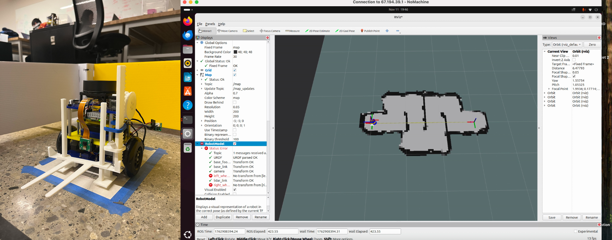

Project · Navigation
Mobile Robot Autonomy
Embedded mapping, particle-filter localization, A* planning and feedback control.

Project overview
This project integrates perception, localization, planning and feedback control on a differential-drive mobile robot. A C++ and ROS2 environment running on a Raspberry Pi connects 2D LiDAR, an IMU and wheel encoders to support navigation with noisy sensor measurements.
Occupancy-grid mapping represents free space and obstacles from LiDAR measurements, using Bresenham’s algorithm to trace sensor rays through the grid. Monte Carlo localization maintains a set of possible robot poses and updates their likelihood as motion and sensor observations become available.
A* planning searches the map for a route to a target, while cascade PID controllers translate motion commands into wheel-level behavior. Together, these components connect a map and pose estimate with executable robot motion.
Runtime analysis examined whether particle-filter localization could run within the embedded system’s computation budget. The resume reports real-time localization at 10 Hz with up to thousands of particles, linking algorithm design with practical onboard performance.